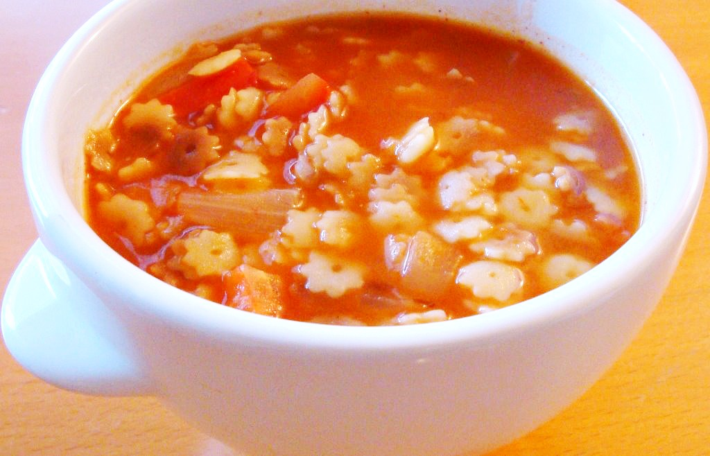

SOUPS

Sopa de Estreallitas
Meal time: 40min
Serving size: 8
Ingredients needed:
- 1 cup chopped celery
- 1 cup chopped onion
- 1 bag of star noodles
- 2 tbs oil
- 8 oz can of tomato sauce
- 2 heaping tbs of chicken knorr
Instructions:
- in a pan, heat up the oil to medium heat. in a pot, fill the pot up with water and tomato sauce. boil the mixture.
- prepare the celery and onion
- add the celery and onion to the pan and cook until onion is clear
- add in star noodles and stir until golden brown
- transfer the noodles, onions, and celery to the pot. add a generous amount of chicken knorr to the soup
- let the soup boil for 10 minutes and check the noodles periodically
- once the noodles are cooked, take pot off of heat and serve